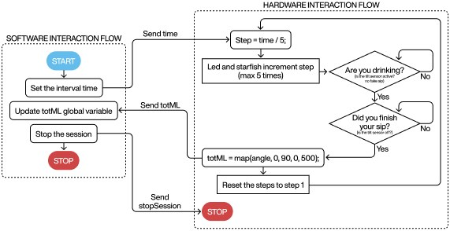
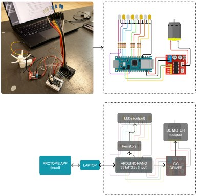
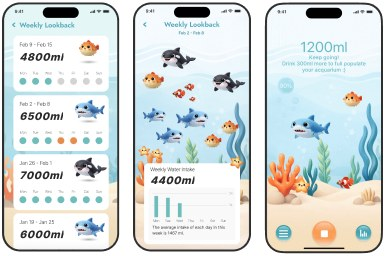

[1] Introduction
Sip is an interactive hydration system: a smart cup with a starfish-shaped companion that reacts to every sip, connected to an app that transforms the water you drink into a growing digital aquarium. Designed for sedentary and highly focused people (studying, office, remote work) who tend to forget to drink.
Developed by a team of 3 for the Hardware & Software Technologies for Design course. My contribution focused on Arduino programming and the design and assembly of the physical prototype.
[2] How it works
Set your hydration schedule in the app → the cup sends a discreet physical reminder (soft light, starfish contracting) → the sensor detects the actual sip → the starfish returns to resting position, signalling completion → the digital aquarium updates and unlocks new fish → the user reviews their daily and weekly hydration history.
[3] The physical product
The cup evolved from an initial model to an optimised version, with the main challenge being fitting electronic components and wiring inside an object designed for normal handling.
Components:
- 1× Arduino Nano 33 IoT
- 8× LEDs
- 8× resistors
- 1× DC motor
- 1× DC driver
- 31× wired connections
The board was chosen deliberately: the Arduino Nano 33 IoT already includes a built-in motion sensor (accelerometer + gyroscope), eliminating the need for a separate external IMU and further reducing the space required inside the cup, a critical constraint given the limited physical space.
[4] Problem solving + data analysis (AI)
The tilt sensor confused the cup rotating on the table with an actual tilt, causing false positives in sip detection.
Debugging started with raw IMU data collected by rotating the cup 360°, iteratively analysed with ChatGPT to isolate the issue: tilt values remained stuck at the same number regardless of real movement. The analysis led to normalising acceleration to isolate gravity direction, discarding unstable readings, and projecting angular velocity onto the gravity vector to distinguish rotation (yaw) from real tilt. The system establishes its neutral position by averaging multiple samples of the actual resting position.
Result: reliable detection in real use conditions, after baseline calibration and a yaw-based check.

[5] App design
The app translates hydration into a growth system: each goal reached unlocks a new species in the digital aquarium, making visible an otherwise invisible metric (how much I've drunk today) through a metaphor that encourages returning to check it.
[1] Introduction
Interactive hydration system: smart cup + starfish companion reacting to every sip, connected to an app where water drunk → growing digital aquarium. For sedentary, highly focused people (study, office, remote work) who forget to drink.
Team of 3 · Hardware & Software Technologies for Design. My role: Arduino programming + physical prototype (design, assembly).
[2] How it works
Set schedule in app → cup sends discreet reminder (soft light, starfish contracts) → sensor detects real sip → starfish back to rest = done → aquarium updates, new fish unlocked → daily/weekly history.
[3] The physical product
First model → optimised version. Main challenge: electronics and wiring inside an object made for normal handling.
Components: 1× Arduino Nano 33 IoT · 8× LEDs · 8× resistors · 1× DC motor · 1× DC driver · 31× wired connections.
Nano 33 IoT chosen on purpose: built-in motion sensor (accelerometer + gyroscope) → no external IMU, less space in an already tight cup.

[4] Problem solving + data analysis (AI)
Problem: tilt sensor confused cup rotating on the table with a real tilt → false sip detections.
Debug: raw IMU data from 360° rotations, analysed iteratively with ChatGPT → tilt stuck at the same value whatever the movement. Fix: normalise acceleration to isolate gravity · discard unstable readings · project angular velocity onto gravity vector → yaw ≠ tilt. Neutral position = average of multiple resting samples.
Result: reliable detection in real use, after baseline calibration + yaw check.
[5] App design
Hydration → growth: each goal unlocks a new species in the aquarium. Invisible metric (how much I drank today) made visible, metaphor pulls you back to check.
